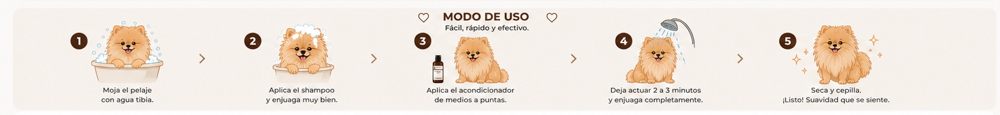

Pelaje más suave
Ayuda a reducir la sensación áspera y deja el pelo agradable al tacto.
Una fórmula acondicionadora para complementar el baño, mejorar la manejabilidad del pelaje y dejar una suavidad que se nota al tocarlo.
Diseñado para mejorar la sensación, el brillo y la facilidad de cepillado.
Ayuda a reducir la sensación áspera y deja el pelo agradable al tacto.
Mejora la apariencia del pelaje sin dejarlo pesado.
Favorece el deslizamiento del cepillo y ayuda a reducir tirones.
Complementa la limpieza con ingredientes humectantes y acondicionadores.
Una combinación pensada para dejar el pelaje manejable sin sobrecargarlo.
Ayudan a mejorar la textura y el deslizamiento del pelo.
Facilitan el desenredado y el cepillado después del baño.
Contribuyen a mantener una sensación más flexible y menos áspera.
Complementan el acondicionamiento sin una película pesada.
Ayudan a que el pelaje luzca cuidado, suave y brillante.
La proteína hidrolizada acompaña el acabado y la manejabilidad.
Terry te muestra cómo incorporar el acondicionador a la rutina de baño.

Enjuaga bien el shampoo antes de aplicar el acondicionador.
Distribuye el acondicionador sobre el pelaje húmedo.
Reparte el producto de manera uniforme, especialmente en las zonas con más enredos.
Espera unos minutos para que la fórmula acondicione el pelaje.
Retira completamente con agua y cepilla con suavidad.
Uno limpia. El otro mejora la suavidad, la manejabilidad y el acabado.
El paso de limpieza.
El paso de acabado.
El toque final para un pelaje bonito, brillante y fácil de cepillar.